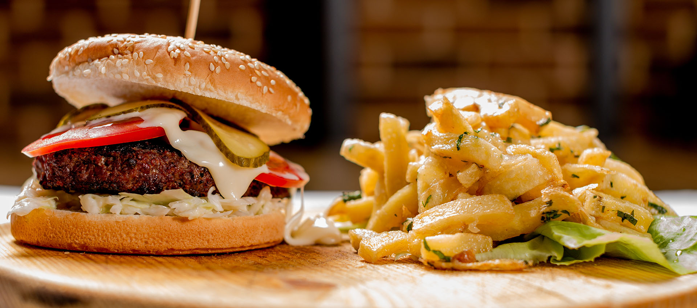

La Restaurantul Alex's Tavern incă de la intrare te învăluie o atmosferă plăcută, ambientul te invita la
clipe de relaxare, la plăcerea de a degusta preparate delicioase din bucataria noastra cu specific
romanesc, dar si international si a savura o băutură care sa-ti meargă la casa sufletului.
Restaurantul Alex's Tavern va ofera o ambianta de exceptie unde poti servi o masa intre prieteni, un
business launch sau o cina romantica.

Despre noi
Restaurantul nostru vine în întampinarea gurmanzilor, oferindu-le oportunitatea de a descoperi specialități tradiționale românești.